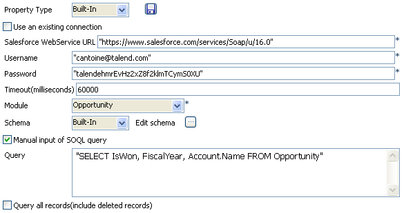
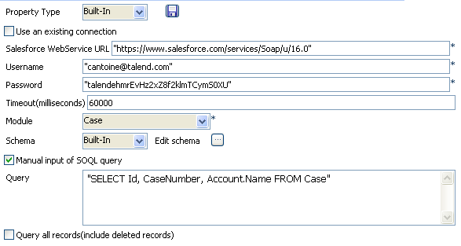

|
Component family |
Business/Cloud | ||||
|
Function |
tSalesforceInput connects to an object of a Salesforce database via the relevant webservice. | ||||
|
Purpose |
Allows to extract data from a Salesforce DB based on a query. | ||||
|
Basic settings |
Property type |
Either Built-in or Repository. | |||
|
|
|
Built-in: No property data stored centrally. | |||
|
|
|
Repository: Select the repository file where properties are stored. The fields that come after are pre-filled in using the fetched data. | |||
|
|
|
Click this icon to open a connection wizard and store the Excel file connection parameters you set in the component Basic settings view. For more information about setting up and storing file connection parameters, see Talend Open Studio User Guide. | |||
|
|
Use an existing connection |
Select this check box to use an established connection from tSalesforceConnection. Once you select it, the Component list field appear allowing you to choose the tSalesforceConnection component to be used. For more information on tSalesforceConnection, see section the section called “tSalesforceConnection”.
| |||
|
|
Salesforce Webservice URL |
Type in the webservice URL to connect to the Salesforce DB. | |||
|
|
Username and Password |
Type in the Webservice user authentication data. | |||
|
|
Timeout (milliseconds) |
Type in the intended number of query timeout in Salesforce.com. | |||
|
|
Module |
Select the relevant module in the list.
| |||
|
|
Schema and Edit Schema |
A schema is a row description, i.e., it defines the number of fields that will be processed and passed on to the next component. The schema is either built-in or remote in the Repository. Click Edit Schema to make changes to the schema. Note that if you make changes, the schema automatically becomes built-in. In this component the schema is related to the Module selected.
| |||
|
|
Query condition |
Type in the query to select the data to be extracted. Example: account_name= ‘Talend’
| |||
|
|
Maunal input of SOQL query |
Select this check box to display the Query field where you can manually enter the desired query. | |||
|
|
Query all records (include deleted records) |
Select this check box to query all the records, including the deletions. | |||
|
Advanced settings |
Batch Size |
Number of registrations in each processed batch. | |||
|
|
Use Socks Proxy |
Select this check box if you want to use a proxy server. Once selected, you need enter the connection parameters that are the host, the port, the username and the passerword of the Proxy you need to use. | |||
|
|
Normalize delimited (for child relationship) |
Characters, strings or regular expressions used to normalize the data that is collected by queries set on different hierarchical Salsforce objects. | |||
|
|
Column name delimiter (for child relationship) |
Characters, strings or regular expressions used to separate the name of the parent object from the name of the child object when you use a query on the hierarchical relations among the different Salesforce objects. | |||
|
|
Use Soap Compression |
Select this check box to activate the SOAP compression.
| |||
|
|
tStatCatcher Statistics |
Select this check box to gather the Job processing metadata at a Job level as well as at each component level. | |||
|
|
Client ID |
Set the ID of the real user to differentiate between those who use the same account and password to access the salesforce website. | |||
|
Usage |
Usually used as a Start component. An output component is required. | ||||
|
Limitation |
n/a | ||||
![[Note]](../images/note.png)
This scenario describes a four component Job used to extract specific sets of data from parent and child objects in a Salesforce database.
Drop two tSalesforceInput components and two tLogRow components onto the workspace.
 |
Connect each tSalesforceInput component to a tLogRow component using a Row > Main link for each connection.
Connect tSalesforceInput_1 to tSalesforceInput_2 using an OnSubjobOk link.
Double click tSalesforceInput_1 to set its Basic Settings in the Component tab.
|  |
As the Property Type, select Built-In.
Enter the Salesforce WebService URL of the database you want to connect to in the corresponding field.
Enter your authentication information in the corresponding Username and Password fields.
Enter the desired query Timeout (milliseconds) limit.
Select the Module (salesforce object) you want to query.
Select the Manual input of SOQL Query check box to enter your Query in the corresponding field.
Enter your query or relationship query, respecting the SOQL syntax required.
In this example, the IsWon and FiscalYear columns in the query are located in the Opportunity module specified. The Name column is in a linked module called Account. To return a column from a linked module the correct syntax is to enter the name of the linked module, followed by the period character, then the name of the column of interest. Hence, the query required in this example is:
“SELECT IsWon, FiscalYear, Account.Name FROM Opportunity”
.
![[Warning]](../images/warning.png) | |
To retrieve a column from a linked module, it is necessary to define the
column in a particular manner in the Edit
schema view. The correct syntax is:
|
Select Built-In as the Schema and click [...] next to Edit schema to open the schema editor.
 |
Edit the schema as required using the [+] and [x] buttons.
Add a new column for the fields taken from the Name column in the Account module.
Name this column Opportunity_Account_Name.
Click OK to save the changes and close the schema editor.
Double click tSalesforceInput_2 to set its Basic settings in the Component tab.
|  |
As the Property Type, select Built-In.
Enter the Salesforce WebService URL of the database you want to connect to in the corresponding field.
Enter your authentication information in the corresponding Username and Password fields.
Enter the desired query Timeout (milliseconds) limit.
Select the Module (salesforce object) you want to query.
Select the Manual input of SOQL Query check box to enter your Query in the corresponding field.
Enter your query or relationship query, respecting the SOQL syntax required.
In this example we want to extract the Id and
CaseNumber fields from the Case module as
well as the Name fields from the Account
module. The query is therefore: “SELECT Id, CaseNumber, Account.Name FROM
Case”.
Select Built-In as the Schema and click [...] next to Edit schema to open the schema editor.
 |
Edit the schema as required using the [+] and [x] buttons.
Add a new column for the fields taken from the Name column in the Account module.
Name this column Case_Account_Name.
Click OK to save the changes and close the schema editor.
Click each tLogRow component and set their Basic settings as desired.
In this example there is no need to modify the tLogRow settings.
Press F6 to run the Job.
The results are displayed in the Run tab:
 |